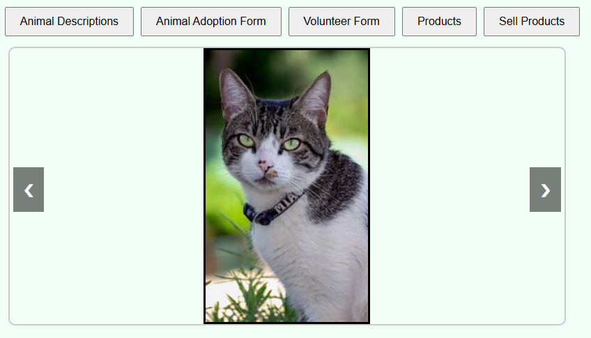
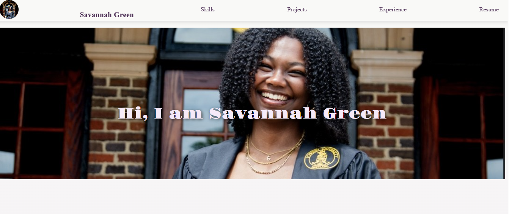

Animal Adoption Platform
A full stack web app that allows users to browse & adopt pets and buy & sell pet products
- React
- Node.js
- CSS
- Vercel

Personal Website
A personal website that showcases my skills, experinece, and projects
- GitHub Pages
- HTML
- CSS
- JavaScript


Graphic Design portfolio
Various graphics created to boost club visibility and engagement
- Canva
- CapCut
- Adobe Illustrator